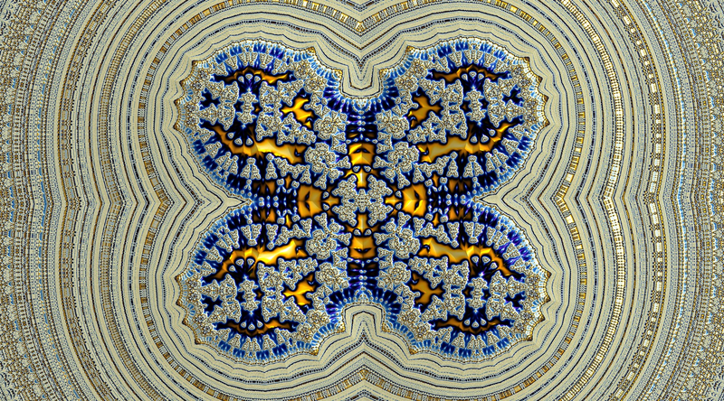

Note
Click here to download the full example code
15 - Burning Ship ultra-deep embedded Julia set
A quite deep structure (embedded Julia set) in the Burning Ship fractal, the total width of this image is 1.144e-2430
Note: this image has been precomputed, expect ~ 15 minutes running time
Reference:
fractalshades.models.Perturbation_burning_ship

import os
import numpy as np
import fractalshades as fs
import fractalshades.models as fsm
import fractalshades.colors as fscolors
from fractalshades.postproc import (
Postproc_batch,
Continuous_iter_pp,
DEM_normal_pp,
DEM_pp,
Raw_pp,
)
from fractalshades.colors.layers import (
Color_layer,
Bool_layer,
Normal_map_layer,
Virtual_layer,
Blinn_lighting,
)
def plot(plot_dir):
fs.settings.enable_multithreading = True
fs.settings.inspect_calc = True
# A simple showcase using perturbation technique
calc_name = 'test'
# _1 = 'Zoom parameters'
x = '0.9701936652696929025320753291021640069692654539316192998690923109401640867955993661348402555113639551710389101266542415971713942486853216393813649162979072547802417224340652323262349158389334222627811644016253597391910029659316357301998127587222911117068692937332263734688107162276430725865891377027713219435118320751548351664213810242465280926268914698425230524658130684070344443995452567778895673305004993390817273703571507825574829894122869598971957471705903352258502762254515515294361066180146074561032643573598722222040496154173393661429490397936640507771227517101854622975574415244458931292699949722160346459208442222961574753315177077539276852355729273319726015475770381618494157179214482373568782661649893310709907661731283117496242239709610429793578072391266559685331120528561114267437654526716995553024543729650536697559791250379020754250672903734923573448717942943970298095818493434609616937968121189348915555572214918303889546231350020628286397997223715011412261542650692454110755809628279239489879585268252621147649793481723065430907267117608758281779102978838648576921218120920962002264825015745588106847913525492946452254310787172486775814422122258092027377707108268191120425919419124835292966550576001399275366568807963389218809780107599068214155523579653859084541530366841366189505107906987430630242953271455020116151957081318685880252401380281985572955696248793398164635626713220524430572775261137001148028279576668450581561222782481785001043128664688763378893104772392955185000696803820972737541438683344039638953094260285865657085589180182401507503580004384560540383870385355241193112481290785723047285697605254733548290893942245092627651651597869625383903066457022608922389414718924539227224855002012100422058545400484296629494939495311402675752380033879258498963813054249403893785636202594225524125444879526890786429302509808140838804324205049577779873109362536111588098204163722382772040534826219430414203370606339177481259221710436256127718568043922242263455585216900496206889267264670797765613503122865835068501053587942697743829310740221948451782496228263890214297763849890218437752497232935905539132371858453304851040938800309404157353512244520248353104991665694075780295836215561681922849217489246497234914909661588296261737678281244380882132424479613283511058520818429539788070014640299439958887553486018555428170031502849984538414538283716997058565931477170027800285363915713662125726473190638471805030561786691988766585905120420802671798950748153123632932101839271798463486809455980364923603860241993173947540920871574857984475500033900285891572051331980943433866207740473090255765926025362244986669503742755255761071007380522591713350354372923905266136798183026883477060543423404255409949958510710181465068796856775021564289722894075691901606980839573089380439646179897286950602737725518737743149383048757676902746131152858587997308837198280957610490765294039265796120872204840688751047818805426697896004881996087794134834541904986316576382567945932525117723689238841232653703186017752082678551709427045117285741568408159980026266607206821702028484285572261067135817176650277663048832133374499193757209012687308740638703942796829031242634716670534811758112294940705163198806862045641853768128528678129943319108514352726869421618074581679561487179583752574084012257968149086118827963632934540281637162816796623971374068354964049687564272665939022313134943833032930081817808816571149205341253749932571363250600539008902957944594882185436888415938849376528050163050589699932677908593044670740671118471172091408961371322320178653168964106320028728910603405461496016941884816463351862600385376307271678607452228129723654598643285656270293178616716'
y = '1.21850295274166974285702071299767293230448362783030256370418850426357812057287765795952909924874314330508539969297886115274649834200989268894208451239482225013300749456502263345911904061918405882267247319640688051306115980517738668779489717879501797247258224809897775280770852170258524412633558130505883724476866966985508458485919142819601329989687383448811037328082711721161470690121878493198046358751839236149434681950533255245187053933483778601504447950294838247845161783672811219834764478385186536497269842475968078558031675762083791360425745174704632874233983998182892145684751326328477083040861737509281015468411385389799984042475645628283558816947511162507651187667952040913572385278651100236121151887105253470185386674667986900188832059392352799856055322950729537375843901237399061284500643278779523591449616710476752264936216345806658043344658616643340678735739519525433264767270027061430543843257187353877029555551270526391938747214615199439858552596337543726651722260002339052840165118128842461581572996436079005195568395312763188058724140996816691570490056140831878429089047778661296784385866528334486352645873846613947046435483002278866092987724375382417893268993996789745199683180023050054757812070654246649162524801382131688052955724944350764117640869637378117002796335124733411885369789817724803637992093699164231716264219807491466334675822160875747737352771836575692415983039374841213730639072517022935737002367376076782877752872774682695937987247835325076927546214877546749292729514915230666466612076502052209867773261393221279506334633925663482220243233759618731656757054526390951602593781676864648757161654591629775803477145807128633219340498634238071474286810481780127174598323843130633698185793350985264024244567565795200632993437302853950640720883008215879846772012565283775155209563908664290135152767807758384559765858961368461418697755588559361261559562547843420334889254205200542988951775379745070583888281723802233108308868335894104909439497685122828086115731663784771973213827612717787290171980623596746423267019501342758440202781865794668524662923516285704981397241611769293891860366514881989109998519017268978043590088138050508291854806906653036530251655628823119136269919660938345363340977528809686088471594328564773430014726859926884866091693053008667768667029710137521480096382432397345027289209805594561724116020130359822106694866563748366420873505724341857417166911438588629601764796166018056925106978740196193095511282645002632228924471792762377886653689070196075349430503711630195354583316883889332315550229961337944948802122535673559333485491168799073112748947303702398815365012235238849818042795200722778163065197570883655006796896547740657554368285328326518332339955921813615404845789583995754872948257000357280954452059089713452964552785619609694617590918835906422081541806668445769065304518054867016814502798798621371847122830515827824438021537601537901219394409297530315316238367106391847669718306661263047179405151161522520089272227345915855310745096068187870411949867267316670474925303842274582605243780765146300670901447071096148484224309570783489169499114398205981269517513504046673637695036470030628820443783471508541712256435283497244102888248732917144073469861996130039426950206864949867081828449123019760537449171909445930798337532184341249212812130202805258780206286589086100632687788279327472327605560361209394561537188797717261975365462204634477350129833000259344100759147984232983575585494791630753243440990975272411206618343610080071104037572887403807774237628513657204466949750585208693693049703385359689453648379702904870898075750613735069421419461158987725465408508371921319695407192650925958187051991698058761098'
dx = '1.14487966e-2430'
xy_ratio = 1.8
theta_deg = 12.0
dps = 2440
nx = 3200
# _1b = 'Skew parameters /!\\ Re-run when modified!'
has_skew = True
skew_00 = 0.7270379024905976
skew_01 = 0.46070490548507187
skew_10 = 0.23453177132939212
skew_11 = 1.524060759071476
# _2 = 'Calculation parameters'
max_iter = 500000
# _3 = 'Bilinear series parameters'
eps = 1e-06
# _4 = 'Plotting parameters: base field'
base_layer = 'distance_estimation'
interior_color = (0.1, 0.1, 0.1)
colormap = fscolors.cmap_register["classic"]
invert_cmap = True
DEM_min = 1e-04
cmap_z_kind = 'relative'
zmin = -0.25
zmax = 0.25
# _5 = 'Plotting parameters: shading'
shade_kind = 'glossy'
gloss_intensity = 30.0
light_angle_deg = 45.0
light_color = (1.0, 1.0, 1.0)
gloss_light_color = (1.0, 1.0, 0.7450980544090271)
# Run the calculation
fractal = fsm.Perturbation_burning_ship(plot_dir)
# f.clean_up()
fractal.zoom(precision=dps, x=x, y=y, dx=dx, nx=nx, xy_ratio=xy_ratio,
theta_deg=theta_deg, projection="cartesian", antialiasing=False,
has_skew=has_skew, skew_00=skew_00, skew_01=skew_01,
skew_10=skew_10, skew_11=skew_11
)
fractal.calc_std_div(
calc_name=calc_name,
subset=None,
max_iter=max_iter,
M_divergence=1.e3,
BLA_params={"eps": eps},
)
if fractal.res_available():
print("RES AVAILABLE, no compute")
else:
print("RES NOT AVAILABLE, clean-up")
fractal.clean_up(calc_name)
fractal.run()
pp = Postproc_batch(fractal, calc_name)
if base_layer == "continuous_iter":
pp.add_postproc(base_layer, Continuous_iter_pp())
elif base_layer == "distance_estimation":
pp.add_postproc("continuous_iter", Continuous_iter_pp())
pp.add_postproc(base_layer, DEM_pp())
pp.add_postproc("interior", Raw_pp("stop_reason",
func=lambda x: x != 1))
if shade_kind != "None":
pp.add_postproc("DEM_map", DEM_normal_pp(kind="potential"))
plotter = fs.Fractal_plotter(pp)
plotter.add_layer(Bool_layer("interior", output=False))
if shade_kind != "None":
plotter.add_layer(Normal_map_layer(
"DEM_map", max_slope=60, output=True
))
if base_layer != 'continuous_iter':
plotter.add_layer(
Virtual_layer("continuous_iter", func=None, output=False)
)
sign = {False: 1., True: -1.}[invert_cmap]
if base_layer == 'distance_estimation':
cmap_func = lambda x: sign * np.where(
np.isinf(x),
np.log(DEM_min),
np.log(np.clip(x, DEM_min, None))
)
else:
cmap_func = lambda x: sign * np.log(x)
plotter.add_layer(Color_layer(
base_layer,
func=cmap_func,
colormap=colormap,
probes_z=[zmin, zmax],
probes_kind=cmap_z_kind,
output=True))
plotter[base_layer].set_mask(
plotter["interior"], mask_color=interior_color
)
if shade_kind != "None":
light = Blinn_lighting(0.4, np.array([1., 1., 1.]))
light.add_light_source(
k_diffuse=0.8,
k_specular=.0,
shininess=350.,
angles=(light_angle_deg, 20.),
coords=None,
color=np.array(light_color))
if shade_kind == "glossy":
light.add_light_source(
k_diffuse=0.2,
k_specular=gloss_intensity,
shininess=400.,
angles=(light_angle_deg, 20.),
coords=None,
color=np.array(gloss_light_color))
plotter[base_layer].shade(plotter["DEM_map"], light)
plotter.plot()
def _plot_from_data(plot_dir):
# Private function only used when building fractalshades documentation
# This example takes too long too run to autogenerate the image for the
# gallery each - so just grabbing the file from the html doc static path
import PIL
data_path = fs.settings.output_context["doc_data_dir"]
im = PIL.Image.open(os.path.join(data_path, "deep_julia_BS.jpg"))
rgb_im = im.convert('RGB')
tag_dict = {"Software": "fractalshades " + fs.__version__,
"example_plot": "tetration_spring"}
pnginfo = PIL.PngImagePlugin.PngInfo()
for k, v in tag_dict.items():
pnginfo.add_text(k, str(v))
if fs.settings.output_context["doc"]:
fs.settings.add_figure(fs._Pillow_figure(rgb_im, pnginfo))
else:
# Should not happen
raise RuntimeError()
if __name__ == "__main__":
# Some magic to get the directory for plotting: with a name that matches
# the file or a temporary dir if we are building the documentation
try:
realpath = os.path.realpath(__file__)
plot_dir = os.path.splitext(realpath)[0]
plot(plot_dir)
except NameError:
import tempfile
with tempfile.TemporaryDirectory() as plot_dir:
fs.utils.exec_no_output(_plot_from_data, plot_dir)
Total running time of the script: ( 0 minutes 0.125 seconds)